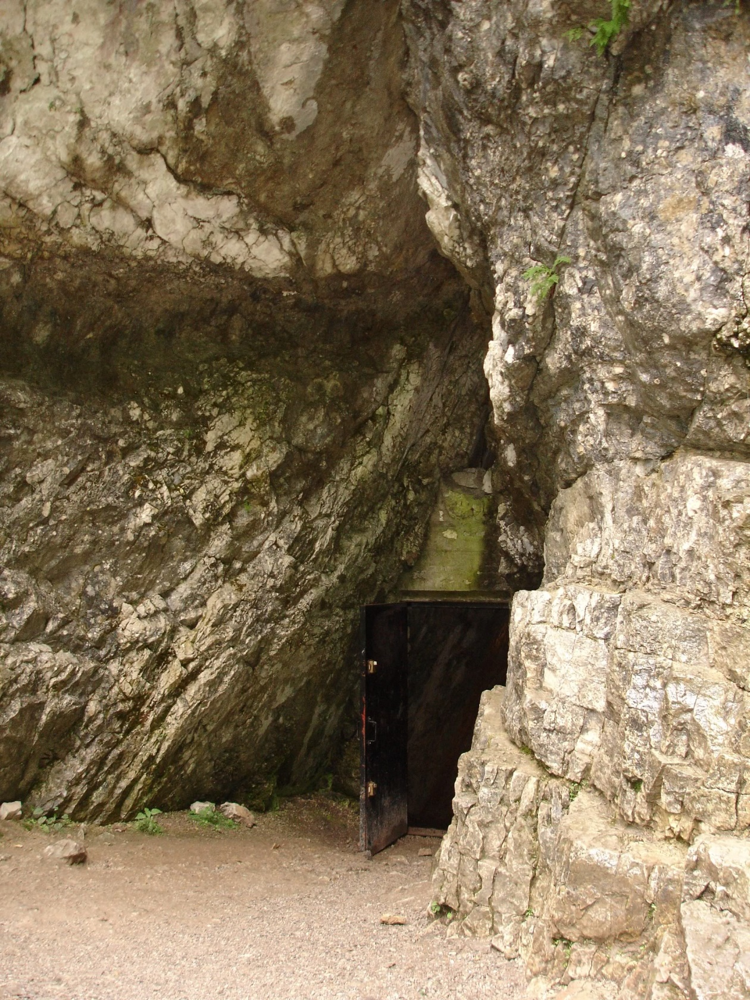
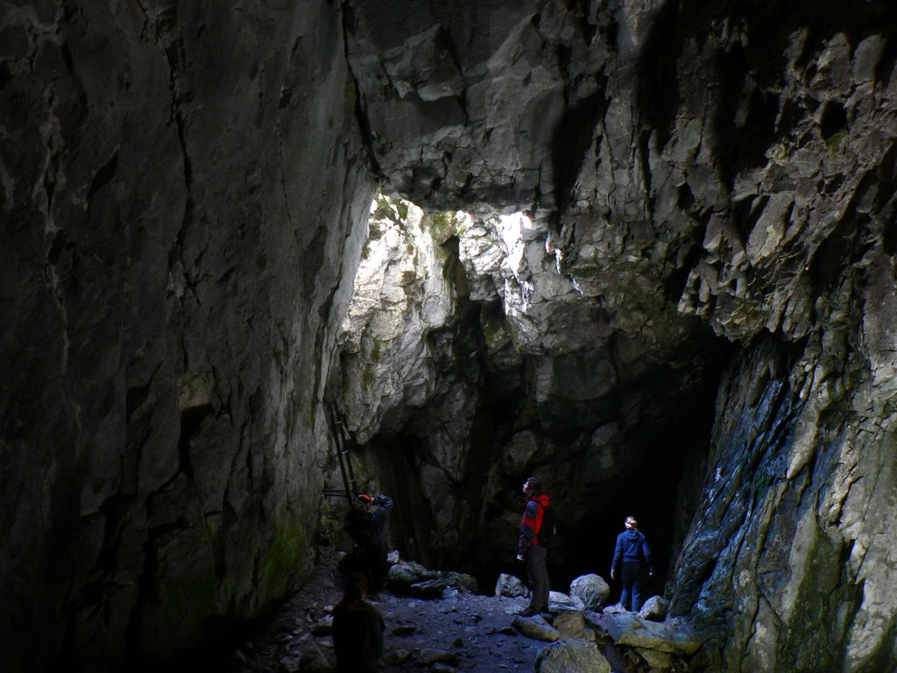
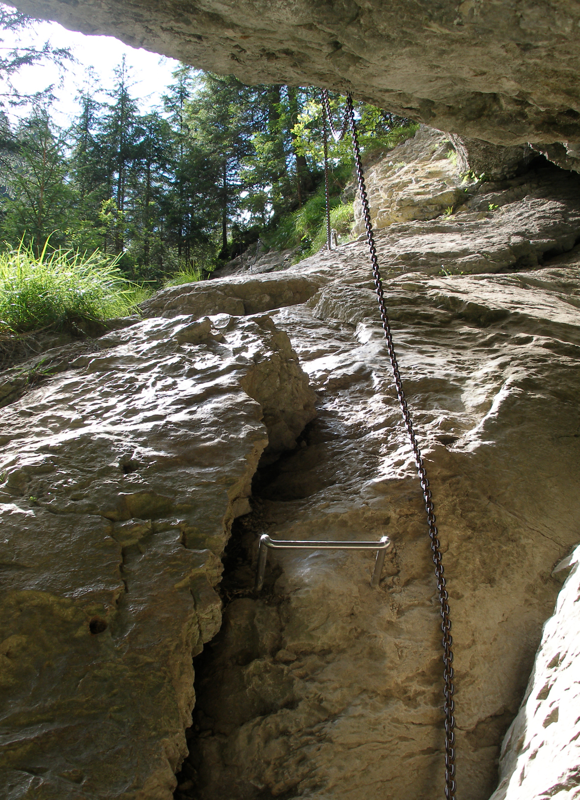

Jaskinie w Tatrach
Strona główna Podział Tatr Znaczenie turystyczne| Nazwa | Długość | Zdjęcie | Położenie |
|---|---|---|---|
| Jaskinia Mroźna | 773 m |  | Tatry Zachodnie - Dolina Kościeliska |
| Jaskinia Mylna | 1630 m |  |
Masyw Raptawickiej Turni - Dolina Kościeliska |
| Jaskinia Raptawicka | 560 m |  | Raptawicka Turnia w Tatrach Zachodnich - Dolina Kościeliska |
| Smocza Jama | 44 m |  | Dolina Kościeliska - Wąwóz Kraków |